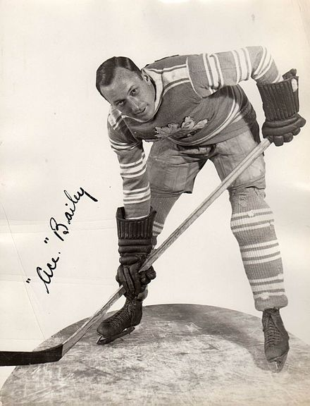
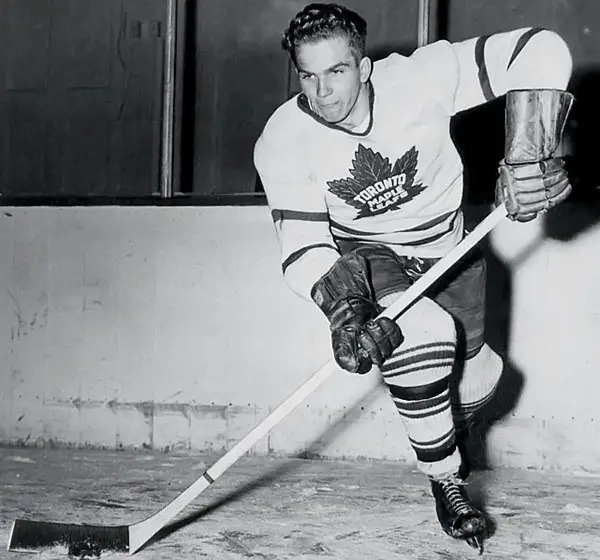
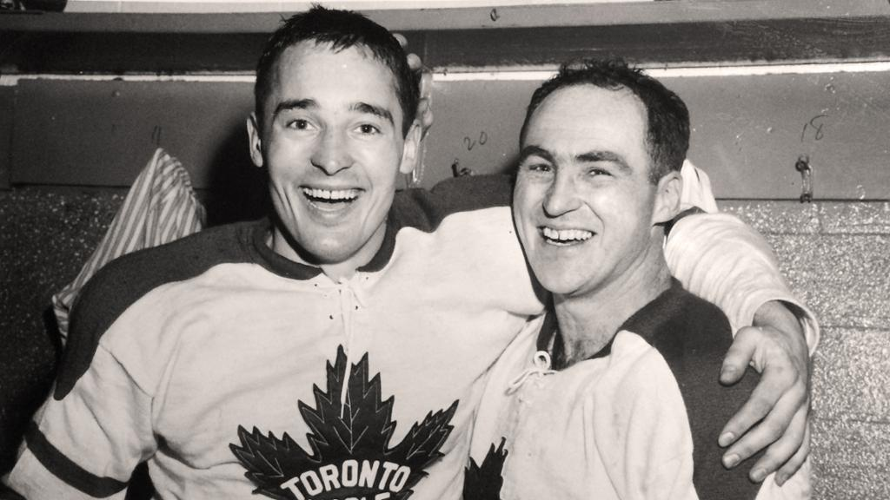
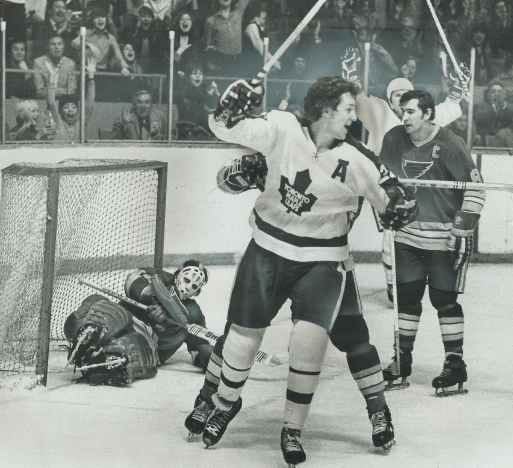
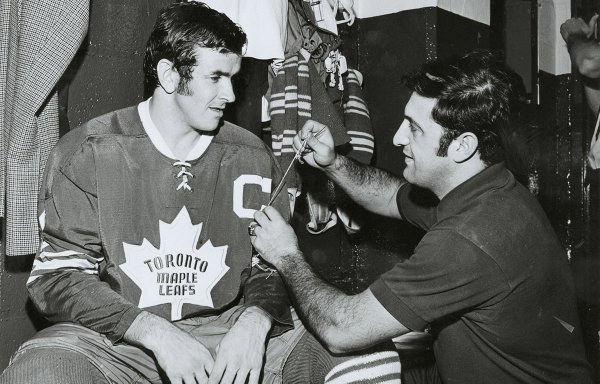
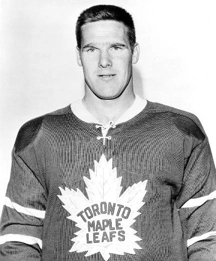

Player History
The Toronto Maple Leafs have had a lot of players throughout their time in the NHL. Here we cover a few numbers the leafs have retired over the years.
#6 (1934)
Ace Bailey Was the only player to play #6 and played it from 1926-1933. His career came to a quick end on December 12, 1933, when he was struck from behind by Eddie Shore of the team Boston Bruins, and hit his head on the ice, causing a skull fracture, a fight inused between the teams. After Fears of Bailey not surviving the hit to the head he pulled through but would not play again. The Number was then retired on Febuary 14, 1934. He found other ways to continue with his passion of hockey through Coaching the University of Toronto Varisty Blues men's Ice hockey team, as well as being a timekeeper at the Maple Leaf Gardens. In 1968 Bailey asked it be unretired so Ron Ellis could wear it. His number was retired again the same day he had a stroke on April 1st, 1992 he died 6 days later on April 7, 1992.
#5 (1951)
Bill Barilko was the only player to play #5 in the leafs and played it from 1950 to 1951. During the one season he played at number 5 the Toronto Maple Leafs won the stanley Cup! Bill played with the leafs between 1947 and 1951. Sadly, on August 26, 1951 Bill dissapeared in a missing floatplane while gone on a fishing trip. The plane was then found 11 years later. The cause of the crash was due to pilot inexperience, poor weather and overloaded cargo. The leafs retired number 5 the year Bill Barilko went missing.
#27 (1960)
Mavovlich played over 700 games with the Leafs, and was key to all four of their championships over the last 50 years. He won the Calder trophy in his first year with the team, and was a consistent threat for the years after. In 1960-1961 his 48 goals were just two shy of Rocket Richard's record. Leaf fans found Mahovlich frustrating much of the time, but it is hard to imagine they would have won more than one Cup over these years without him.
#27 (1967)
Sittler was an offensive powerhouse throughout his career. In his 844 regular-season games with the Leafs, Sittler picked up enough points to rank today as the team’s second highest scorer of all time. In 1975-1976, Sittler had a phenomenal year, scoring an NHL-record six goals in one game during the regular season, followed up by five goals in a playoff game. He was a classy leader at a time when Leafs had the worst possible ownership and management. In 1977-1978 Sittler had another great year, scoring 117 points and leading the Leafs to the semifinals. However, by 1979 Ballard brought in Imlach to take apart the team and drive away the Leaf captain.
#14 (1960)
Dave Keon won with Calder trophy in his first year in the league, and went on to a Hall of Fame career as the greatest all-time Leaf, playing over 1000 games. Keon had a great offensive career—he ranks as third all-time on the Leafs’ list despite playing in a lower scoring era, but he was a two-way player, known as the best penalty killer of his time. Keon managed to be an extremely effective forechecker while avoiding penalties. He won the Lady Byng trophy twice, but more impressively won the Leafs’ only Conn Smythe trophy in 1967. Four Cups, key to all of them.
#7 (1975)

Professed by many to be the strongest NHL player ever, Horton played 1185 games as a Leaf, always at a high level as evidenced
by multiple All-Star appearances. He led a strong Leaf defence for three-consecutive Stanley Cups.